移动端适配
前言
- 静态布局：直接使用 px 作为单位
- 流式布局：宽度使用%百分比，高度使用 px 作为单位
- 自适应布局：创建多个静态布局，每个静态布局对应一个屏幕分辨率范围。使用 @media 媒体查询来切换多个布局
- 响应式布局：通常是糅合了流式布局+弹性布局，再搭配媒体查询技术使用
- 弹性布局：通常指的是 rem 或 em 布局。rem 是相对于 html 元素的 font-size 大小而言的，而 em 是相对于其父元素（非 font-size 的是相对于自身的 font-size）
内容
一、基本概念
- 尺寸
- 分辨率
- 设备独立像素
- 视口
1.1 尺寸
参考单位与值
1.2 分辨率
屏幕分辨率
屏幕分辨率指一个屏幕具体由多少个像素点组成。
下面是apple的官网上对手机分辨率的描述：
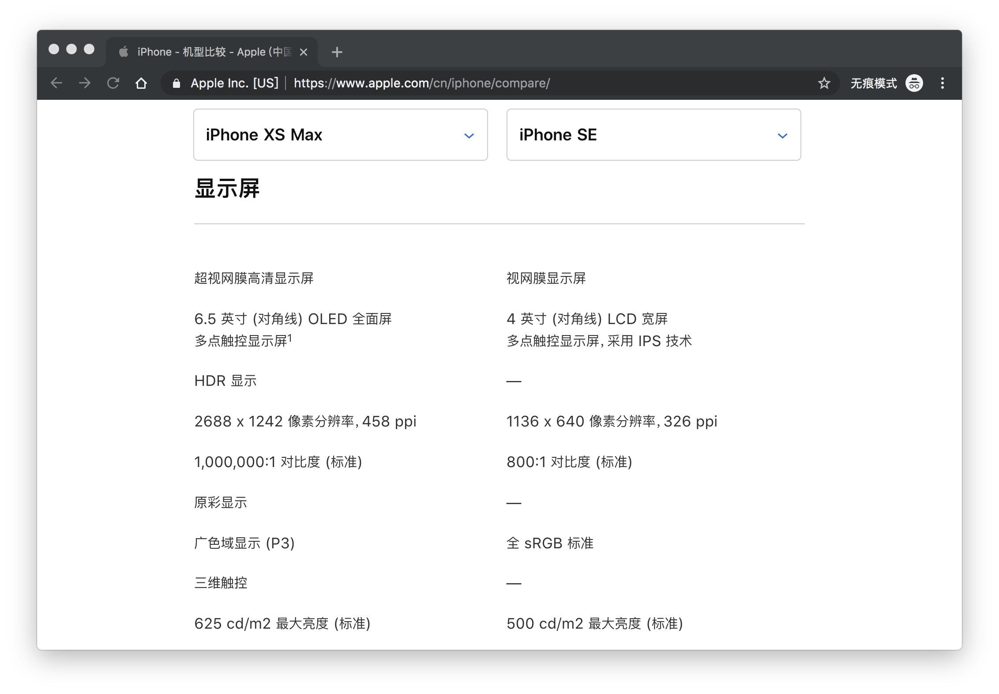
iPhone XS Max和iPhone SE的分辨率分别为2688 x 1242和1136 x 640。这表示手机分别在垂直和水平上所具有的像素点数。
图像分辨率
我们通常说的图片分辨率其实是指图片含有的像素数，比如一张图片的分辨率为800*400。这表示图片分别在垂直和水平上所具有的像素点为800和400。
同一尺寸的图片，分辨率越高，图片越清晰。
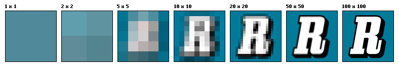
PPI
PPI(Pixel Per Inch)：每英寸包括的像素数。
PPI 可以用于描述屏幕的清晰度以及一张图片的质量。
使用PPI描述图片时，PPI 越高，图片质量越高，使用 PPI 描述屏幕时，PPI越高，屏幕越清晰。
在上面描述手机分辨率的图片中，我们可以看到：iPhone XS Max 和 iPhone SE 的 PPI 分别为 458 和 326，这足以证明前者的屏幕更清晰。
由于手机尺寸为手机对角线的长度，我们通常使用如下的方法计算 PPI:

iPhone 6 的 PPI 为 ，那它每英寸约含有 326 个物理像素点。
DPI
DPI(Dot Per Inch)：即每英寸包括的点数。
这里的点是一个抽象的单位，它可以是屏幕像素点、图片像素点也可以是打印机的墨点。
平时你可能会看到使用DPI来描述图片和屏幕，这时的DPI应该和PPI是等价的，DPI 最常用的是用于描述打印机，表示打印机每英寸可以打印的点数。
一张图片在屏幕上显示时，它的像素点数是规则排列的，每个像素点都有特定的位置和颜色。
当使用打印机进行打印时，打印机可能不会规则的将这些点打印出来，而是使用一个个打印点来呈现这张图像，这些打印点之间会有一定的空隙，这就是 DPI 所描述的：打印点的密度。
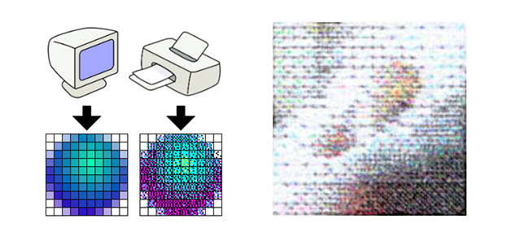
在上面的图像中我们可以清晰的看到，打印机是如何使用墨点来打印一张图像。
所以，打印机的DPI越高，打印图像的精细程度就越高，同时这也会消耗更多的墨点和时间。
1.3 设备独立像素
实际上，上面我们描述的像素都是物理像素，即设备上真实的物理单元。
下面我们来看看设备独立像素究竟是如何产生的：
智能手机发展非常之快，在几年之前，我们还用着分辨率非常低的手机，比如下面左侧的白色手机，它的分辨率是320x480，我们可以在上面浏览正常的文字、图片等等。
但是，随着科技的发展，低分辨率的手机已经不能满足我们的需求了。很快，更高分辨率的屏幕诞生了，比如下面的黑色手机，它的分辨率是640x940，正好是白色手机的两倍。
理论上来讲，在白色手机上相同大小的图片和文字，在黑色手机上会被缩放一倍，因为它的分辨率提高了一倍。这样，岂不是后面出现更高分辨率的手机，页面元素会变得越来越小吗？
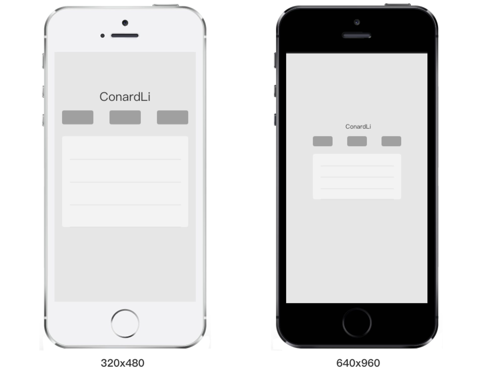
然而，事实并不是这样的，我们现在使用的智能手机，不管分辨率多高，他们所展示的界面比例都是基本类似的。乔布斯在iPhone4的发布会上首次提出了Retina Display(视网膜屏幕)的概念，它正是解决了上面的问题，这也使它成为一款跨时代的手机。
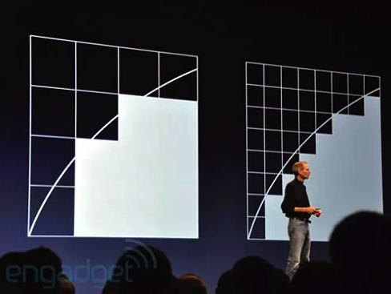
在iPhone4使用的视网膜屏幕中，把2x2个像素当1个像素使用，这样让屏幕看起来更精致，但是元素的大小却不会改变。
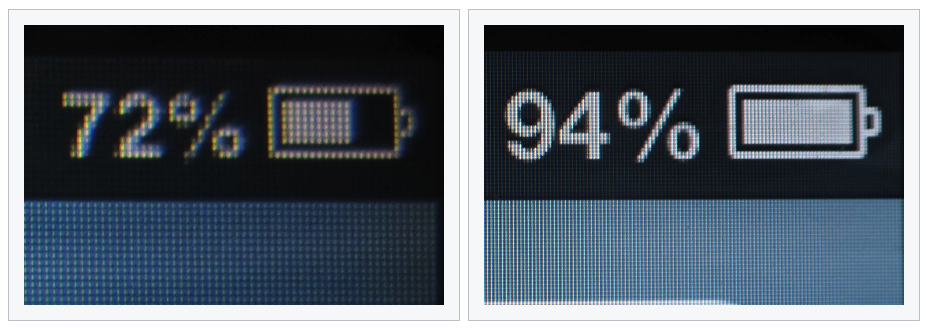
如果黑色手机使用了视网膜屏幕的技术，那么显示结果应该是下面的情况，比如列表的宽度为 300 个像素，那么在一条水平线上，白色手机会用 300 个物理像素去渲染它，而黑色手机实际上会用 600 个物理像素去渲染它。 我们必须用一种单位来同时告诉不同分辨率的手机，它们在界面上显示元素的大小是多少，这个单位就是设备独立像素(Device Independent Pixels)简称 DIP 或 DP。上面我们说，列表的宽度为 300 个像素，实际上我们可以说：列表的宽度为 300 个设备独立像素。
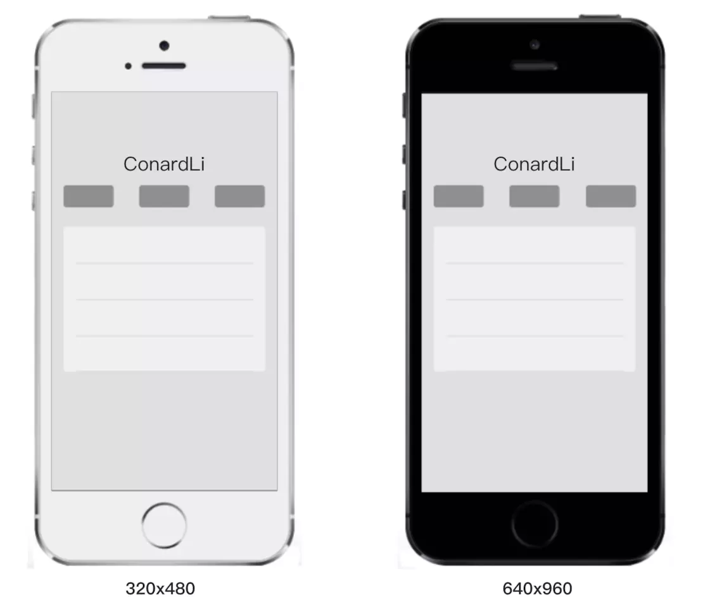
打开 chrome 的开发者工具，我们可以模拟各个手机型号的显示情况，每种型号上面会显示一个尺寸，比如 iPhone X 显示的尺寸是 375x812，实际 iPhone X 的分辨率会比这高很多，这里显示的就是设备独立像素。
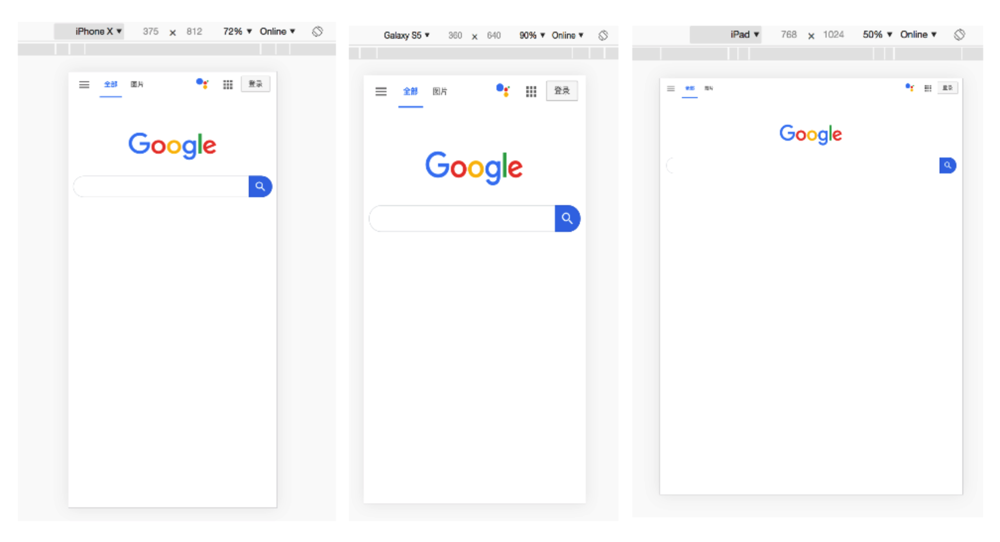
设备像素比
设备像素比简称为dpr，其定义了物理像素和设备独立像素的对应关系。它的值可以按下面的公式计算得到：
设备像素比 ＝ 物理像素 / 设备独立像素
在 JavaScript 中，可以通过window.devicePixelRatio获取到当前设备的 dpr。
在 css 中，可以通过-webkit-device-pixel-ratio、-webkit-min-device-pixel-ratio和-webkit-max-device-pixel-ratio进行媒体查询，对不同 dpr 的设备，做一些样式适配。或者使用 resolution|min-resolution|max-resolution 比较新的标准方式
当然，上面的规则也有例外，iPhone 6、7、8 Plus 的实际物理像素是 1080 x 1920，在开发者工具中我们可以看到：它的设备独立像素是 414 x 736，设备像素比为 3，设备独立像素和设备像素比的乘积并不等于 1080 x 1920，而是等于 1242 x 2208。
实际上，手机会自动把 1242 x 2208 个像素点塞进 1080 * 1920 个物理像素点来渲染，我们不用关心这个过程，而 1242 x 2208 被称为屏幕的设计像素。我们开发过程中也是以这个设计像素为准。
实际上，从苹果提出视网膜屏幕开始，才出现设备像素比这个概念，因为在这之前，移动设备都是直接使用物理像素来进行展示。
紧接着，Android 同样使用了其他的技术方案来实现 DPR 大于 1 的屏幕，不过原理是类似的。由于 Android 屏幕尺寸非常多、分辨率高低跨度非常大，不像苹果只有它自己的几款固定设备、尺寸。所以，为了保证各种设备的显示效果，Android 按照设备的像素密度将设备分成了几个区间：
当然，所有的 Android 设备不一定严格按照上面的分辨率，每个类型可能对应几种不同分辨率，所以，每个 Android 手机都能根据给定的区间范围，确定自己的 DPR，从而拥有类似的显示。当然，仅仅是类似，由于各个设备的尺寸、分辨率上的差异，设备独立像素也不会完全相等，所以各种 Android 设备仍然不能做到在展示上完全相等。
客户端开发
在 iOS、Android 和 React Native开发中样式单位其实都使用的是设备独立像素。
iOS 的尺寸单位为 pt，Android 的尺寸单位为 dp，React Native 中没有指定明确的单位，它们其实都是设备独立像素 dp。
在使用React Native开发 App 时，UI 给我们的原型图一般是基于 iphone6 的像素给定的。
为了适配所有机型，我们在写样式时需要把物理像素转换为设备独立像素：例如：如果给定一个元素的高度为 200px(这里的 px 指物理像素，非 CSS 像素)，iphone6 的设备像素比为 2，我们给定的 height 应为 200px/2=100dp。
当然，最好的是，你可以和设计沟通好，所有的 UI 图都按照设备独立像素来出。
web 端开发
在写 CSS 时，我们用到最多的单位是 px，即 CSS 像素，当页面缩放比例为 100%时，一个 CSS 像素等于一个设备独立像素。
但是 CSS 像素是很容易被改变的，当用户对浏览器进行了放大，CSS 像素会被放大，这时一个 CSS 像素会跨越更多的物理像素。
页面的缩放系数 = CSS像素 / 设备独立像素。
1.4 视口
视口(viewport)代表当前可见的计算机图形区域。在web浏览器术语中，通常与浏览器窗口相同，但不包括浏览器的UI，菜单栏等——即指你正在浏览的文档的那一部分。
一般我们所说的视口共包括三种：布局视口、视觉视口和理想视口，它们在屏幕适配中起着非常重要的作用。
布局视口
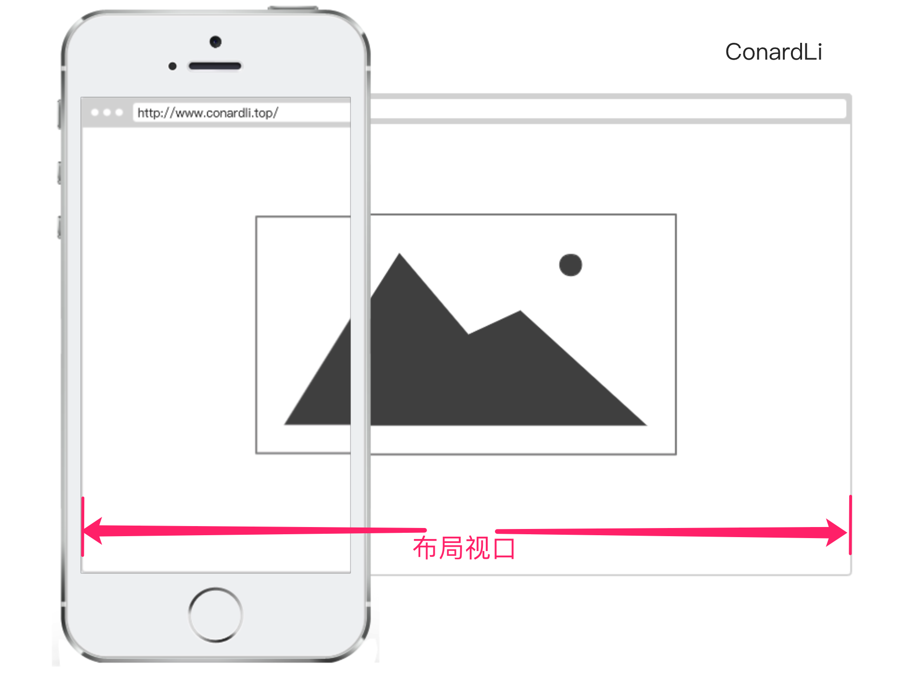
布局视口(layout viewport)：当我们以百分比来指定一个元素的大小时，它的计算值是由这个元素的饮食块计算而来的。当这个元素是最顶级的元素时，它就是基于布局视口来计算的。
所以，布局视口是网页布局的基准窗口，在PC浏览器上，布局视口就等于当前浏览器的窗口大小（不包括borders、margins、滚动条）。
在移动端，布局视口被赋予一个默认值，大部分为980px，这保证PC的网页可以在手机浏览器上呈现，但是非常小，用户可以手动对网页进行放大。
我们可以通过调用document.documentElement.clientWidth / clientHeight来获取布局视口大小。
视觉视口
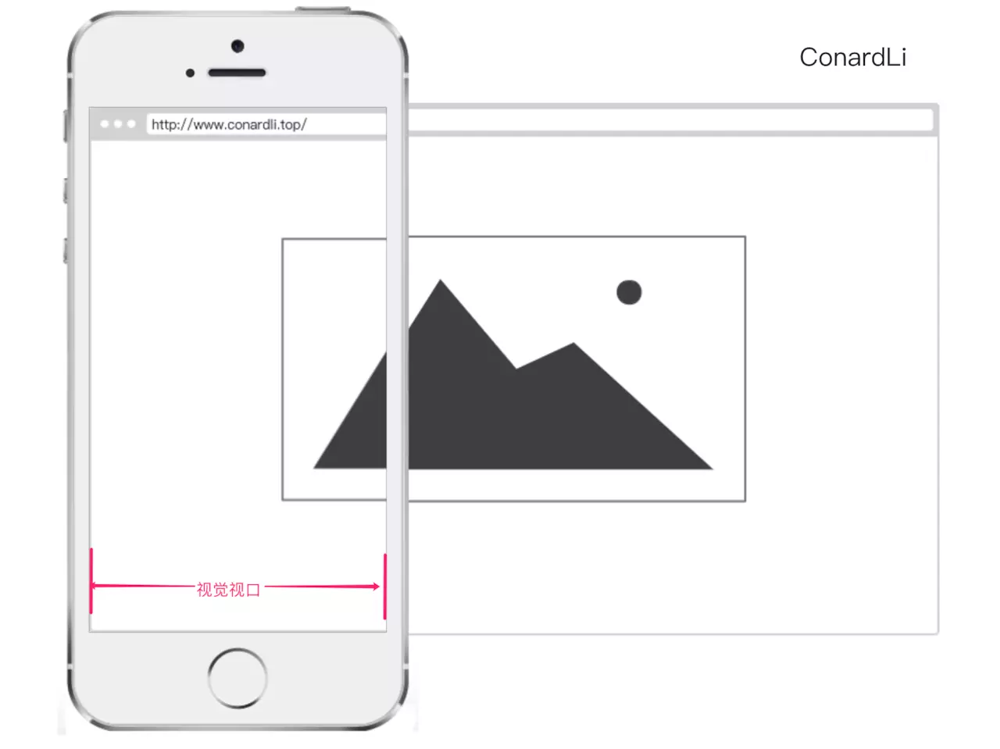
视觉视口(visual viewport)：用户通过屏幕真实看到的区域。
视觉视口默认等于当前浏览器的窗口大小（包括滚动条宽度）。
当用户对浏览器进行缩放时，不会改变布局视口的大小，所以页面布局是不变的，但是缩放会改变视觉视口的大小。
例如：用户将浏览器窗口放大了200%，这时浏览器窗口中的 CSS 像素会随着视觉视口的放大而放大，这时一个 CSS 像素会跨越更多的物理像素。
所以，布局视口会限制你的 CSS 布局而视觉视口决定用户具体能看到什么。
我们可以通过调用window.innerWidth / innerHeight来获取视觉视口大小。
理想视口

布局视口在移动端展示的效果并不是一个理想的效果，所以理想视口(ideal viewport)就诞生了：网站页面在移动端展示的理想大小。
如上图，我们在描述设备独立像素时曾使用过这张图，在浏览器调试移动端时页面上给定的像素大小就是理想视口大小，它的单位正是设备独立像素。
上面在介绍CSS像素时曾经提到页面的缩放系数 = CSS像素 / 设备独立像素，实际上说页面的缩放系数 = 理想视口宽度 / 视觉视口宽度更为准确。
所以，当页面缩放比例为100%时，CSS像素 = 设备独立像素，理想视口 = 视觉视口。
我们可以通过调用screen.width / height来获取理想视口大小。
Meta viewport
<meta>元素表示那些不能由其它HTML相关元素之一表示的任何元素数据信息，它可以告诉浏览器如何解析页面。
我们可以借助<meta>元素的viewport来帮助我们设置视口、缩放等，从而让移动端得到更好的展示效果。
<meta name="viewport" content="width=device-width; initial-scale=1; maximum-scale=1; minimum-scale=1; user-scalable=no;">
上面是viewport的一个配置，我们来看看它们的具体含义：
| Value | 可能值 | 描述 |
|---|---|---|
width | 正整数或device-width | 以pixels ( 像素)为单位，定义布局视口的宽度 |
height | 正整数或device-width | 以pix （像素）为单位，定义布局窗口的高度 |
initial-scale | 正整数或device-width | 定义页面初始缩放比例 |
minimum-scale | 正整数或device-width | 定义缩放的最小值；必须小于或等于maximum-scale的值 |
maximum-scale | 0.0-10.0 | 定义缩放的最大值；必须大于或等于minimum-scale的值。 |
user-scalable | 一个布尔值（yes或者no） | 如果设置为no，用户将不能这么大或缩小网页。默认值为 yes |
移动端适配
为了在移动端让页面获得更好的显示效果，我们必须让布局视口、视觉视口都尽可能等于理想视口。
device-width就等于理想视口的宽度，所以设置width=device-width就相当于让布局视口等于理想视口。
由于initial-scale = 理想视口宽度 / 视觉视口宽度，所以我们设置initial-scale=1;就相当于让视觉视口等于理想视口。
这时，1 个CSS像素就等于 1 个设备独立像素，而且我们也是基于理想视口来进行布局的，所以呈现出来的页面布局在各种设备上都能大致相似。
缩放
上面提到width可以决定布局视口的宽度，实际上它并不是布局视口的唯一决定性因素，设置 initial-scale 也有肯能影响到布局视口，因为布局视口宽度取的是 width 和视觉视口宽度的最大值。
例如：若手机的理想视口宽度为400px，设置width=device-width，initial-scale=2，此时视觉视口宽度 = 理想视口宽度 / initial-scale 即 200px，布局视口取两者最大值即 device-width 400px。
若设置 width=device-width，initial-scale=0.5，此时视觉视口宽度 = 理想视口宽度 / initial-scale 即 800px，布局视口取两者最大值即 800px。
获取浏览器大小
window.innerHeight：获取浏览器视觉视口高度（包括垂直滚动条）。window.outHeight：获取浏览器窗口外部的高度。表示整个浏览器窗口的高度，包括侧边栏、窗口镶边和调正窗口大小的边框。window.screenHeight：获取获屏幕取理想视口高度，这个数值是固定的，设备的分辨率/设备像素比window.screen.availHeight：浏览器窗口可用的高度。window.documentElement.clientHeight：获取浏览器布局视口高度，包括内边距，但不包括垂直滚动条、边框和外边距。window.docuemntElement.offsetHeight：包括内边距、滚动条、边框和外边距。window.docuemntElement.scrollHeight：在不使用滚动条的情况下适合视口中的所有内容所需的最小宽度。测量方式与clientHeight相同：它包含元素的内边距，但不包括边框，外边距或垂直滚动条。
参考资料
- 深入浅出 Viewport 设计原理
- 彻底搞懂移动 Web 开发中的 viewport 与跨屏适配
- 页面元素坐标和偏移（clientX/pageX/screenX/layerX/offsetWidth/scrollWidth/clientWidth 等）相关整理
- 十分钟快速了解 JS 中的 offset、scroll、client
二、1px 问题
2.1 1px 产生的原因
- 我们写代码时一般使用设备独立像素来对页面进行布局。而在设备像素比大于
1的屏幕上，我们写的1px实际上是被多个物理像素渲染，这就会出现1px在有些屏幕上看起来很粗的现象。 - 在
retina屏的手机上，dpr为2或3，css里写的1px宽度映射到物理像素上就有2px或3px宽度。 - 例如：
iPhone6的dpr为2，物理像素是750（x轴），它的逻辑像素为375。也就是说，1 个逻辑像素，在x軕和y轴方向，需要 2 个物理像素来显示，即：dpr=2 时，表示 1 个 CSS 像素由 4 个物理像素点组成，如下图表示：
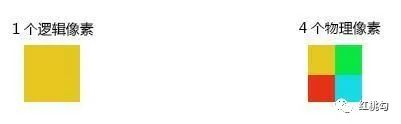
2.2 border-image
基于media查询判断不同的设备像素比给定不同的border-image：
.border_1px{
border-bottom: 1px solid #000;
}
@media only screen and (-webkit-min-device-pixel-ratio:2){
.border_1px{
border-bottom: none;
border-width: 0 0 1px 0;
border-image: url(../img/1pxline.png) 0 0 2 0 stretch;
}
}
2
3
4
5
6
7
8
9
10
2.3 background-image
和border-image类似，准备一张符合条件的边框背影图，模拟在背影上。
.border_1px{
border-bottom: 1px solid #000;
}
@media only screen and (-webkit-min-device-pixel-ratio:2){
.border_1px{
background: url(../img/1pxline.png) repeat-x left bottom;
background-size: 100% 1px;
}
}
2
3
4
5
6
7
8
9
上面两种都需要单独准备图片，而且圆角不是很好处理，但是可以应对大部分场景。
2.4 伪类 + transform
.border_1px:before{
content: '';
position: absolute;
top: 0;
height: 1px;
width: 100%;
background-color: #000;
transform-origin: 50% 0%;
}
@media only screen and (-webkit-min-device-pixel-ratio:2){
.border_1px:before{
transform: scaleY(0.5);
}
}
@media only screen and (-webkit-min-device-pixel-ratio:3){
.border_1px:before{
transform: scaleY(0.33);
}
}
2
3
4
5
6
7
8
9
10
11
12
13
14
15
16
17
18
19
这种方式可以满足各种场景，如果需要满足圆角，只需要给伪类也加上border-radius 即可。
2.5 svg
上面我们border-image和background-image都可以模拟1px边框，但是使用的都是位图，还需要外部引入。
借助PostCSS的postcss-write-svg我们能直接使用border-image和background-image创建svg的1px边框：
@svg border_1px {
height: 2px;
@rect {
fill: var(--color, black);
width: 100%;
height: 50%;
}
}
.example { border: 1px solid transparent; border-image: svg(border_1px param(--color #00b1ff)) 2 2 stretch; }
2
3
4
5
6
7
8
9
编译后：
.example { border: 1px solid transparent; border-image: url("data:image/svg+xml;charset=utf-8,%3Csvg xmlns='http://www.w3.org/2000/svg' height='2px'%3E%3Crect fill='%2300b1ff' width='100%25' height='50%25'/%3E%3C/svg%3E") 2 2 stretch; }
上面的方案是大漠在他的文章中推荐使用的，基本可以满足所有场景，而且不需要外部引入，这是我个人比较喜欢的一种方案。
2.6 设置 viewport
通过设置缩放，让CSS像素等于真正的物理像素。
例如：当设备像素比为3时，我们将页面缩放1/3倍，这时1px等于一个真正的屏幕像素。
const scale = 1 / window.devicePixelRatio;
const viewport = document.querySelector('meta[name="viewport"]');
if (!viewport) {
viewport = document.createElement('meta');
viewport.setAttribute('name', 'viewport');
window.document.head.appendChild(viewport);
}
viewport.setAttribute('content', 'width=device-width,user-scalable=no,initial-scale=' + scale + ',maximum-scale=' + scale + ',minimum-scale=' + scale);
2
3
4
5
6
7
8
实际上，上面这种方案是早先flexible采用的方案。
当然，这样做是要付出代价的，这意味着你页面上所有的布局都要按照物理像素来写。这显然是不现实的，这时，我们可以借助 flexible或 vw、vh 来帮助我们进行适配。
更多资料参考温故而知新：移动端 1px 问题
三、适配 iPhonX
iPhoneX的出现将手机的首付带上了一个新的高度，它取消了物理按键，改成了底部的小黑条，但是这样的改动给开发者适配移动端双增加了难度。
3.1 安全区域
在iPhoneX发布后，许多厂商相继推出了具有边缘屏幕的手机。
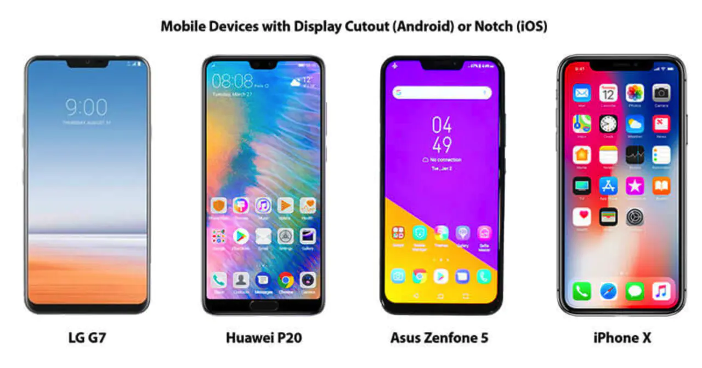
这些手机和普通手机在外观上无外乎做了三个改动：圆角（corners）、刘海（sensor housing）和小黑条（Home Indicator）。为了适配这些手机，安全区域这个变诞生了：安全区域就是一个不受上面三个效果的可视窗口的范围。
为了保证页面的显示效果，我们必须把页面限制在安全范围内，但是不影响整体效果。
3.2 viewport-fit
viewport-fit是专门为了适配iPhoneX而诞生的一个属性，它用于限制网页如何在安全区域内进行展示。
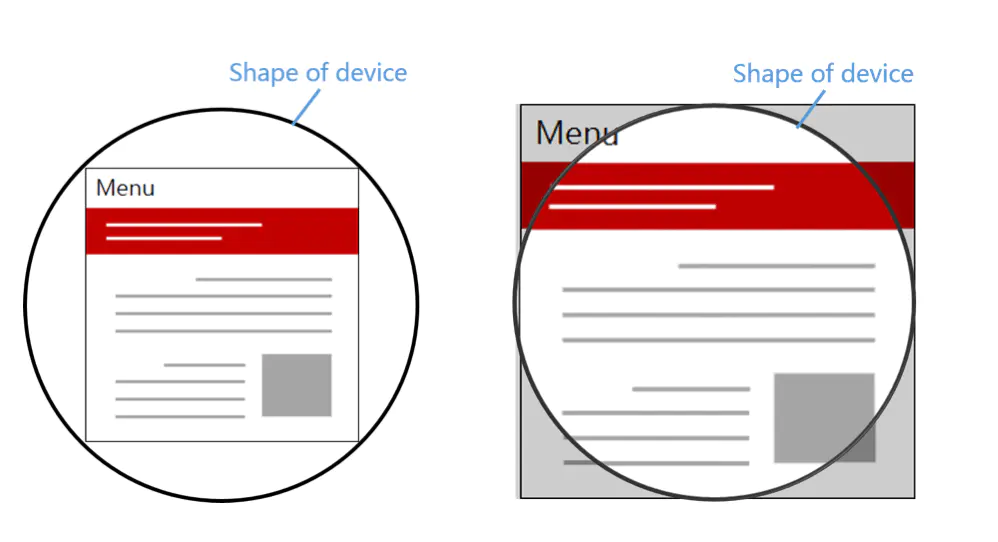
contain：可视窗口完全包含网页内容covert：网页内容完全覆盖可视窗口
默认情况下或者设置为auto和contain效果相同。
3.3 env、constant
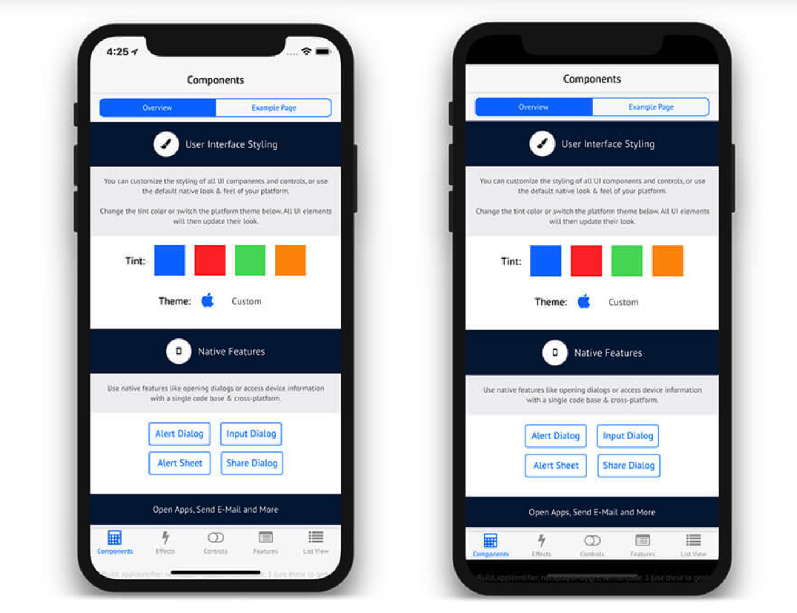
我们需要将顶部和底部合理的摆放在安全区域内，IOS11新增了两个CSS函数env、constant，用于设定安全区域与边界的距离。
函数内部可以是四个常量：
safe-area-inset-left：安全区域距离左边边界距离safe-area-inset-right：安全区域距离右边边界距离safe-area-inset-top：安全区域距离顶部边界距离safe-area-inset-bottom：安全区域距离底部边界距离
注意：我们必须指定viweport-fit后才能使用这两个函数：
<meta name="viewport" content="viewport-fit=cover">
constant 在 iOS < 11.2 的版本中生效，env 在 iOS >= 11.2 的版本中生效，这意味着我们往往要同时设置他们，将页面限制在安全区域内：
body {
padding-bottom: constant(safe-area-inset-bottom);
padding-bottom: env(safe-area-inset-bottom);
}
2
3
4
当使用底部固定导航栏时，我们要为他们设置 padding 值：
{
padding-bottom: constant(safe-area-inset-bottom);
padding-bottom: env(safe-area-inset-bottom);
}
2
3
4
四、横屏适配
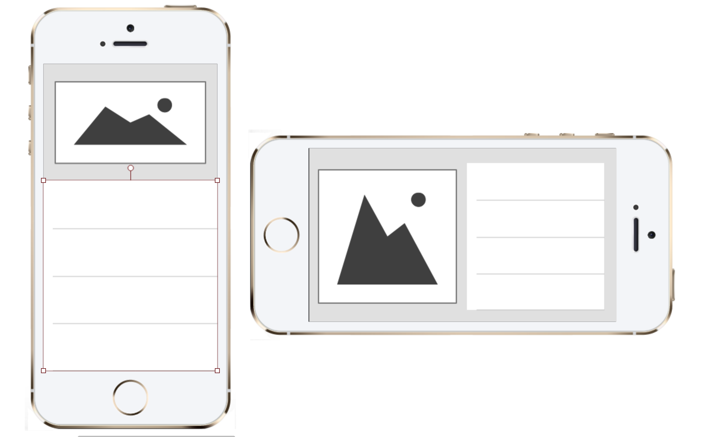
很多视口我们要对横屏和竖屏显示不同的布局，所以我们需要检测在不同的场景下给定不同的样式
4.1 JavaScript 检测横屏
window.orientation获取屏幕旋转方向
window.addEventListener("resize", ()=>{
if (window.orientation === 180 || window.orientation === 0) {
// 正常方向或屏幕旋转180度
console.log('竖屏');
};
if (window.orientation === 90 || window.orientation === -90 ){
// 屏幕顺时钟旋转90度或屏幕逆时针旋转90度
console.log('横屏');
}
});
2
3
4
5
6
7
8
9
10
4.2 CSS 检测横屏
@media screen and (orientation: portrait) {
/*竖屏...*/
}
@media screen and (orientation: landscape) {
/*横屏...*/
}
2
3
4
5
6
五、移动端适配方案
5.1 REM 适配
rem适配的本质是布局等比例的缩放，通过动态设置html的font-size来改变rem 的大小。
vieport 配置
<meta name="viewport" content="width=device-width; initial-scale=1; maximum-scale=1; minimum-scale=1; user-scalable=no;">
上面把scale设置成固定 1 倍的视口的大，也可以根据dpr的值缩放viewport，如下：
//下面是根据设备dpr设置viewport
var dpr = window.devicePixelRatio || 1
var scale = 1 / dpr
viewport.setAttribute("content", "width=device-width" + ",initial-scale=" + scale + ", maximum-scale=" + scale + ", minimum-scale=" + scale + ",user-scalable=no")
2
3
4
5
有几点要注意
viewport标签只对移动端浏览器有效，对PC端浏览器是无效的。- 当缩放比例为
100%时，逻辑像素 = CSS 像素宽度 = 理想视口的宽度 = 布局视口的宽度。 - 单独设置
initial-scale或width都会有兼容性问题，所以设置布局视口为理想视口的最佳方法是同时设置这个属性。 - 即使设置了
user-scalable = no，在Android Chrome浏览器中也可以强制启用手动缩放。
设置 rem 基准值
代码为如下
(function (doc, win) {
var docEl = doc.documentElement
var resizeEvt = 'orientationchange' in window ? 'orientationchange' : 'resize'
function recalc() {
var designWidth = 750
var clientWidth = docEl.clientWidth
if (!clientWidth || clientWidth > designWidth) return
docEl.style.fontSize = (100 * clientWidth / designWidth) + 'px'
}
if (!doc.addEventListener) return
win.addEventListener(resizeEvt, recalc, false)
doc.addEventListener('DOMContentLoaded', recalc, false)
})(document, window)
2
3
4
5
6
7
8
9
10
11
12
13
14
15
- 将 html 节点的 font-size 设置为页面 clientWidth(布局视口)的 1/100，即：
1rem=布局视口的1/100 - 在 iphone6 下：
docEl.clientWidth=设备独立像素（逻辑像素）= 布局视口宽度 = 理想窗口宽度 = 375。此时：1rem = 375/10 +px = 37.5px
使用postcss-pxtorem将单位转化为 rem
module.exports = {
plugins: {
'autoprefixer': {
browsers: ['Android >= 4.0', 'iOS >= 7']
},
'postcss-pxtorem': {
rootValue: 37.5,
propList: ['*', '!font-size'],
selectorBlackList: ['van-circle__layer', 'ignore'],
}
}
}
2
3
4
5
6
7
8
9
10
11
12
rootValue是转换px的基准值，参考设备iPhone6，设备宽度375px规则：基准值=当前设备宽度的 1/10- 基准值设置代码中，在
iPhone6设备设置的html,font-size也为37.5px - 但是设计稿尺寸
750px大小，所以量取设计稿量尺寸的时候需要除以2
rem 布局的缺点
在响应式布局中，必须通过 js 来动态控制根元素font-size的大小，也就是说 css 样式和 js 代码有一定的耦合性，且必须将改变 font-size 的代码放在css样式之前。
5.2 VW 布局
vw是基于 Viewport 视窗的长度单位，指的就是浏览器可视化的区域，而这个可视区域是window.innerWidth/window.innerHeight的大小，用图简单的示意如下：
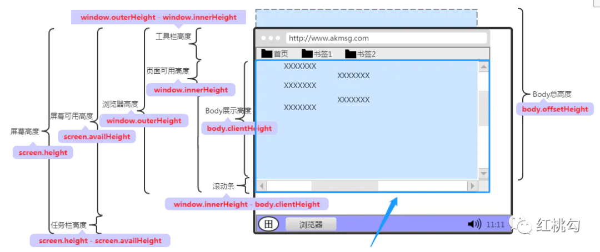
在CSS Values and Units Module Level 3中和Viewport相关的单位有四个，分别为vw、vh、vmin和vmax。
vw：是 Viewport's width 的简写,1vw等于window.innerWidth的1%vh：和vw类似，是Viewport's height的简写，1vh等于window.innerHeihgt的1%vmin：vmin的值是当前vw和vh中较小的值vmax：vmax的值是当前vw和vh中较大的值
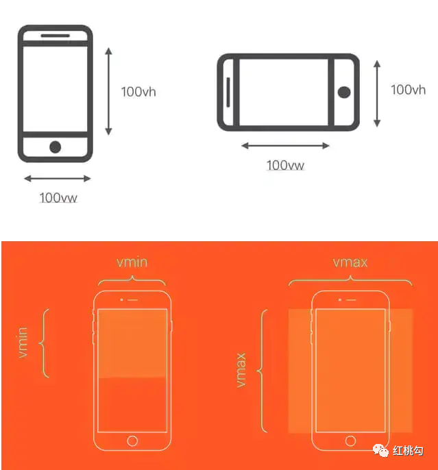
如果设计稿使用 750px 宽度，则 100vw = 750px，即 1vw = 7.5px。那么我们可以根据设计图上的 px值直接转换成对应的 vw 值。如果不想自己计算，我们可以使用 PostCSS 的插件 postcss-px-to-viewport，让我们可以直接在代码中写 px。
{
loader: 'postcss-loader',
options: {
plugins: ()=>{
require('autoprefixer')({
browsers: ['last 5 versions']
}),
require('postcss-px-to-viewport')({
viewportWidth: 375, // 视口宽度（数字）
viewportHeight: 1334, // 视口高度（数字）
unitPrecision: 3, // 设置的保留小数位数（数字）
viewportUnit: 'vw', // 设置要转换的单位（字符）
selectorBlackList: ['.ingore','.hairlines'], // 不需要进行转换的类名（数组）
minPixelValue:1, // 设置要替换的最小像素值（数字）
mediaQuery: false // 允许在媒体查询中转换px（true/false）
})
}
}
}
2
3
4
5
6
7
8
9
10
11
12
13
14
15
16
17
18
19
5.3 REM+VW 布局
vw和rem适配的本质是等比例缩放，让页面在不同屏幕尺寸下有类似于矢量图片缩放的效果的效果，保证了页面元素之间的尺寸缩放比例和位置。- 给元素大小设置随着视口变化而变化的 vw 单位，这样就可以实现动态改变其大小。
- 限制根元素字体大小的最大最小值，配合 body 加上最大宽度和最小宽度。
// rem 单位换算：定为 75px
$vm_fontsize:75; // iPhone 6尺寸的根元素大小基准值
@function rem($px){
@return ($px/$vm_fontsize)*1rem;
}
// 根元素大小使用vm单位
$vm_design:750;
html{
font-size:($vm_fontsize/($vm_design/2))*100vw;
// 同时，通过Media Queries 限制根元素最大最小
@media screen and (max-width:320px){
font-size:64px;
}
@media screen and (min-width:540px){
font-size: 108px;
}
}
// body 也增加最大最小宽度限制，避免默认100%宽度的block元素跟随body而过大过小
body{
max-width:540px;
min-width:320px;
}
2
3
4
5
6
7
8
9
10
11
12
13
14
15
16
17
18
19
20
21
22
5.4 flexible 适配
flexible方案是阿里早期开源的一个移动端适配解决方案，引用 flexible 后，我们在页面上统一使用 rem 来布局。
它的核心代码非常简单：
// set 1rem = viewWidth / 10
function setRemUnit () {
var rem = docEl.clientWidth / 10
docEl.style.fontSize = rem + 'px'
}
setRemUnit();
2
3
4
5
6
rem 是相对于html节点的font-size来做计算的。
我们通过设置 document.documentElement.style.fontSize 就可以统一整个页面的布局标准。
上面的代码中，将 html 节点的 font-size 设置为页面 clientWidth(布局视口)的 1/10，即 1rem 就等于页面布局视口的 1/10，这就意味着我们后面使用的 rem 都是按照页面比例来计算的。
这时，我们只需要将 UI 出的图转换为 rem 即可。
以 iPhone6 为例：布局视口为 375px，则 1rem = 37.5px，这时 UI 给定一个元素的宽为 75px（设备独立像素），我们只需要将它设置为 75 / 37.5 = 2rem。
当然，每个布局都要计算非常繁琐，我们可以借助 PostCSS 的 px2rem 插件来帮助我们完成这个过程。
下面的代码可以保证在页面大小变化时，布局可以自适应，当触发了 window 的 resize 和 pageShow 事件之后自动调整 html 的 fontSize大小。
// reset rem unit on page resize
window.addEventListener('resize', setRemUnit)window.addEventListener('pageshow', function (e) {
if (e.persisted) {
setRemUnit()
}
})
2
3
4
5
6
5.5 参考资料
六、图片模糊问题
6.1 产生原因
我们平时使用的图片大多数都是属于位图（png、jpg...），位图帖一个个像素点构成的，每个像素都具有特定的位置和颜色值：
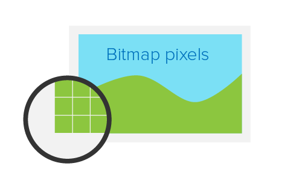
理论上，位图的每个像素对应在屏幕上使用的一个物理像素来渲染，才达到最佳的显示效果。
而在dpr>1的屏幕上，位图的一个像素可能由多个物理像素来渲染，然而这些物理像素点并不能被准确的分配上对应位图像素的颜色，只能取近似值，所以相同的图片在dpr>1的屏幕上就会模糊：
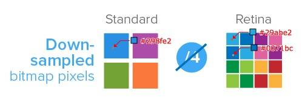
6.2 解决方案
为了保证图片质量，我们应该尽可能让一个屏幕像素来渲染一个图片像素，所以，针对不同DPR的屏幕，我们需要展示不同分辨的图片。
如：在dpr=2的屏幕上展示两倍图(@2x)，在dpr=3的屏幕上展示三倍图(@3x)。
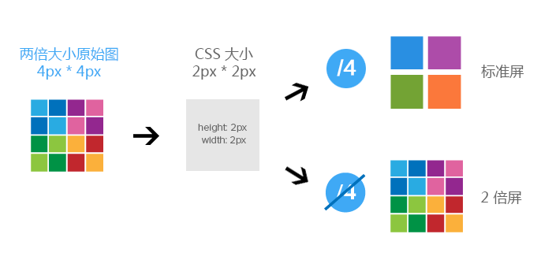
6.3 media 查询
使用media查询判断不同的设备像素比来显示不同精度的图片：
.avatar{
background-image: url(conardLi_1x.png);
}
@media only screen and (-webkit-min-device-pixel-ratio:2){
.avatar{
background-image: url(conardLi_2x.png);
}
}
@media only screen and (-webkit-min-device-pixel-ratio:3){
.avatar{
background-image: url(conardLi_3x.png);
}
}
2
3
4
5
6
7
8
9
10
11
12
13
只适用于背景图
6.4 image-set
使用image-set：
.avatar {
background-image: -webkit-image-set( "conardLi_1x.png" 1x, "conardLi_2x.png" 2x );
}
2
3
只适用于背景图
6.5 srcset
使用img标签的srcset属性，浏览器会自动根据像素密度匹配最佳显示图片：
<img src="conardLi_1x.png"
srcset=" conardLi_2x.png 2x, conardLi_3x.png 3x">
2
6.6 JavaScript 拼接图片 url
使用window.devicePixelRatio获取设备像素比，遍历所有图片，替换图片地址：
const dpr = window.devicePixelRatio;
const images = document.querySelectorAll('img');
images.forEach((img)=>{
img.src.replace(".", `@${dpr}x.`);
})
2
3
4
5
6.7 使用 svg
SVG的全称是可缩放矢量图（Scalable Vector Graphics）。不同于位图的基于像素，SVG 则是属于对图像的形状描述，所以它本质上是文本文件，体积较小，且不管放大多少倍都不会失真。
除了我们手动在代码中绘制svg，我们还可以像使用位图一样使用svg图片：
<img src="conardLi.svg">
<img src="data:image/svg+xml;base64,[data]">
.avatar {
background: url(conardLi.svg);
}
2
3
4
5
6
7
参考资料
- 前端自适应布局你需要知道的所有事
- 响应式布局
- 使用 Flexible 实现手淘 H5 页面的终端适配
- flexible.js 布局详解
- 用 vw、vh ＋媒体查询打造最完美的移动端适配方案
- 前端响应式布局原理与方案（详细版）
- 吃透移动端 H5 响应式布局 ｜深入原理到目前最佳实践方案
- 移动端适配 - 基础知识篇
- 设计体系的响应式设计
- 关于移动端适配，你必须要知道的
- 前端基础知识概述 -- 移动端开发的屏幕、图像、字体与布局的兼容适配
- 细说移动端 经典的 REM 布局 与 新秀 VW 布局
联系作者
平凡世界，贵在坚持。